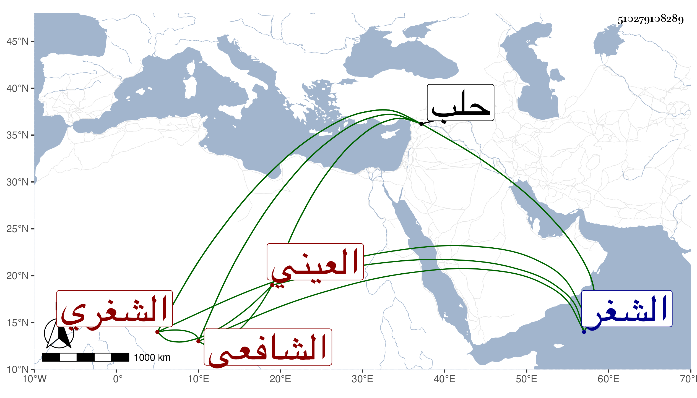

0902Sakhawi.DawLamic.ITO20230111-ara1.EIS1600.510279108289
Biography ID: 510279108289
1153
يوسف بن أحمد بن داود العيني نسبة لعين البندق من أعمال الشغر ثم الشغري الشافعي نزيل حلب ويقال له الشغري لكونه نشأ بها وإلا فمولده بالعين ، وهو غير الشهاب الشغري نزيل حلب أيضا وصاحب الترجمة أفضلهما رأيت له نظم تصريف العزي مع شرحه وشرح النظم وكذا نظم المنهاج الأصلي وقطعة من المنهاج الفرعي وشرح البهجة في ثمان مجلدات وكان خيرا . مات في سنة خمس وثمانين فيما بلغني رحمه الله .
